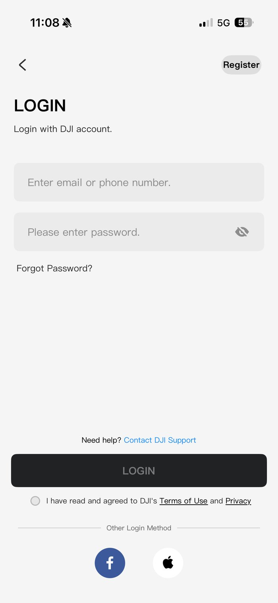
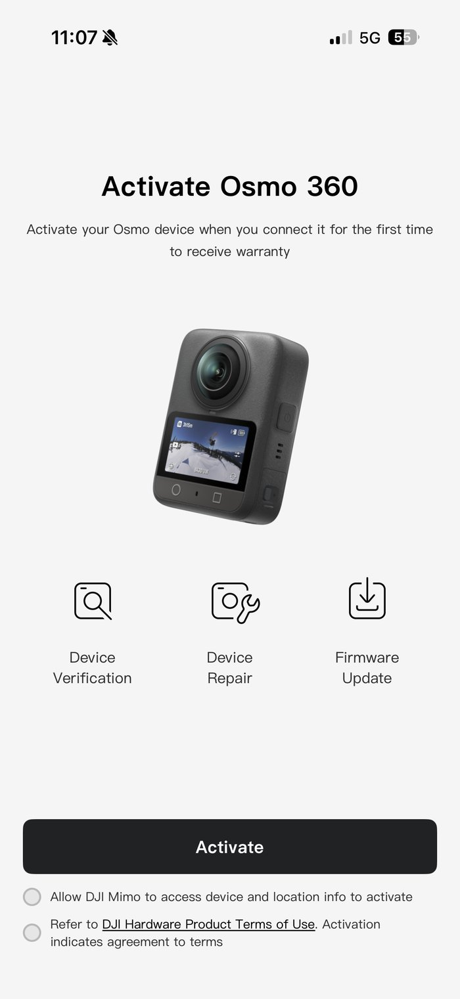
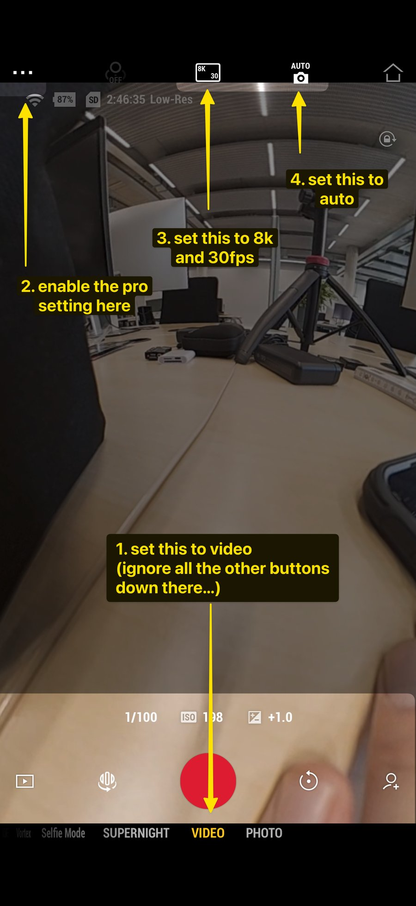
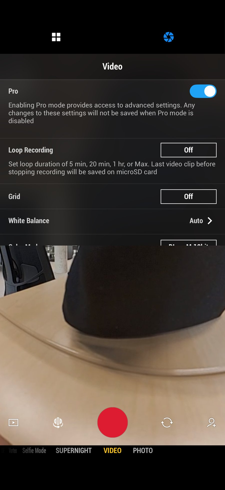
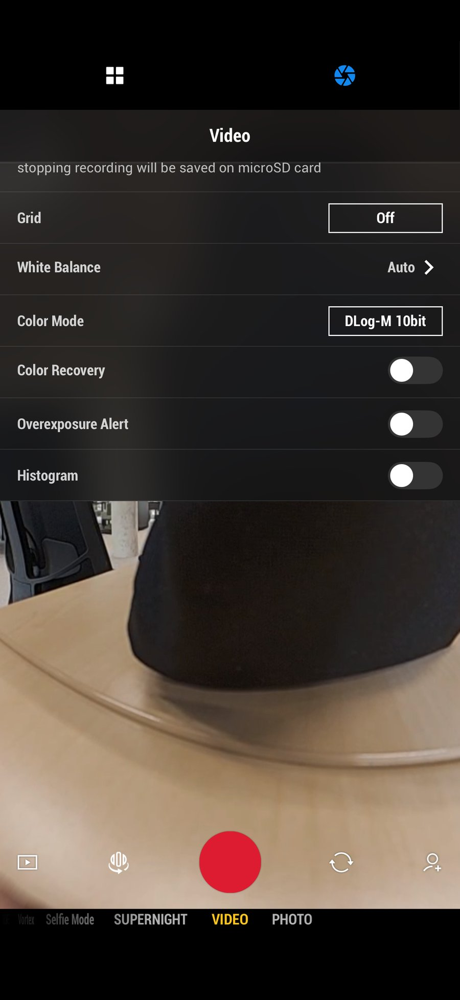
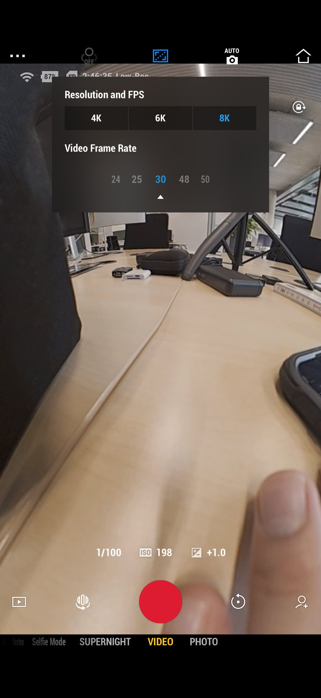
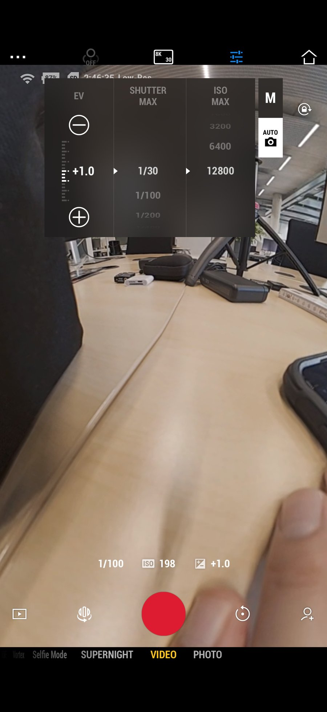
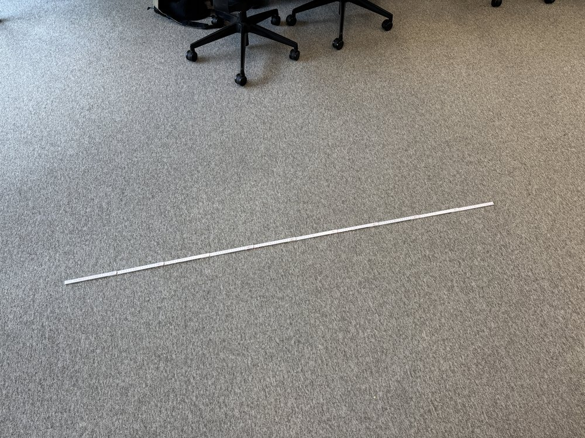
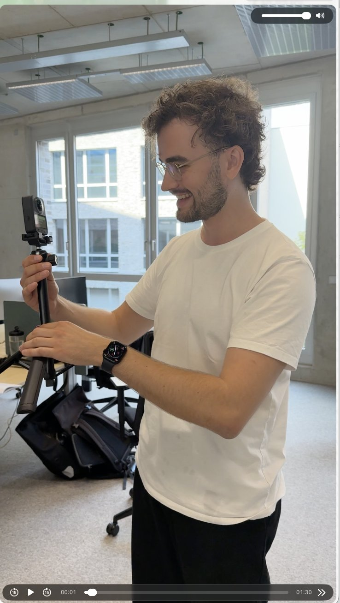
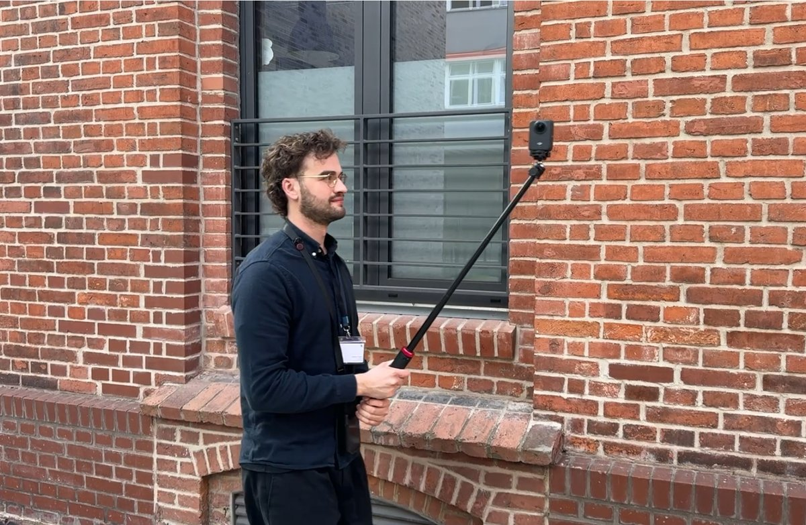

360° Capture Guide
DJI Osmo 360 · If you can film, you can capture. Pick a topic:
One closed loopEnd where you started.
One steady paceSlow indoors, normal outdoors.
One fixed positionCamera fixed to your body. Free hand still.
🔌
Setup
Two things before the first scan of the day.
1
Register camera & app
once🔓
Unlock the phoneCode:
1234✉️
Log in to DJI Mimo with the TwinCloud addressNever a private account. No account yet? Tap Register.
📶
Connect the cameraCamera on, Bluetooth + Wi-Fi on, follow the prompts.
🔑
ActivateTick both checkboxes → Activate. Accept firmware update if asked.


Registration links the camera to the TwinCloud DJI account (warranty + firmware). Already done? It never repeats.
2
Connect & check settings
daily📶
Camera on → open DJI Mimo → connectBluetooth + Wi-Fi on.
1
Mode →
VIDEO2
Pro →
ON3
8K / 30 fps4
Exposure →
AUTONot M.




📷Placeholderannotated 360° preview
Preview looks weird? Normal. The 360° preview warps everything and your body sits strangely in the frame — it doesn't matter. The camera sees everything anyway.
Good news: the camera remembers all settings — the daily check takes seconds.
🎥
Technique
The habits that make every scan work — starting with the Zollstock.
3
Place the Zollstock
every scan📏
Fully unfolded, straight, flat on the floorAny direction — orientation doesn't matter.
🚫
Open floorNot under furniture, not against a wall.
👀
Walk past itMust appear clearly in the video.

Why? The ruler is the scale reference — the model can't be measured without it. Only its length matters, which is why orientation is irrelevant.
4
Hold the camera
🔧
Adjust the stick firstCamera just above your head, stick resting against your belly.
🔘
Power button faces youCamera stays fixed to your body — whole recording.
📐
Camera upright, lens level
✋
Free hand: frozen


Why so strict? You're in every frame. Stay fixed → software removes you cleanly. Move → data lost.
Relax: wobbling while pressing start/stop is fine — those frames are cut anyway.
5
Heights
🙂
Head height defaultStart here — facades, windows, most scans.
👖
WaistOnly: second pass indoors · staircases.
⬆️
Above headOnly: ceiling pipes & ducts. Hold directly over you.
⬇️
Floor, camera flippedOnly: ground pipes, rarely. Fully upside down, button toward you, near your feet.
Rule: changing height? Stop. Start a new video. Never mix heights in one file.
6
Walking speed
🐢
Indoor: half your normal pace
🚶
Outdoor: normal pace
📈
Constant — never stop-and-goFrames are extracted at fixed intervals; a constant pace gives evenly spaced camera positions.
🏢
Scenes
The recipe for each situation. Setup and Technique (Zollstock!) always apply.
7
Indoor / heating room
📏
Zollstock down Technique, step 3
👀
Look around firstPumps, labels, pipes, connections.
🔁
One lap per height,
0.5–1 m from walls2–3 videos: head/ceiling + waist. Floor only if needed.🐢
Slow & smoothNo sudden spins — stop, turn, continue.
🔄
Close the loopMax
6–7 min total per room.Special cases: Dead end → walk the same path back in reverse. Large room → one extra lap at
2–4 m or through the middle (one height). Object hidden behind pipes → stretch your arm in — the only allowed exception to the fixed-position rule.8
Outdoor / facades
📏
Zollstock down, visible in scan
🙂
One heightHigh for facades · waist for ground detail.
↔️
Stay
5–10 m awayNever closer than 3–5 m. Never along the wall.🔄
Full loop around the buildingNever a single straight line.
📐
Corners & entrances from several directionsNever skip recesses, balconies, overhangs.
Lighting: prefer even light — avoid harsh shadows and mixed sun/shade if you can pick the time.
9
Staircases
experimental👖
Waist heightOne height is enough.
🎯
Center pathMiddle of the stairs — not handrail, not wall.
↕️
Two runs: up + downEach run = its own video. Your body blocks the view behind you — two directions see everything.
🚶
Indoor speed, slightly faster OKNot much detail on stairs.
Experimental: if results come back blurry, slow down to normal indoor speed.
⚡
Cheat sheet
Every capture, same routine. Tap to check off — links jump to the details.
Check camera settings
VIDEO · Pro · 8K/30 · AUTO→ 2 SettingsPut out the ZollstockUnfolded, flat, on open floor→ 3 Zollstock
Check the sceneIndoor, outdoor or staircase — pick the recipe→ Scenes
Set camera heightDefault: just above your head · stick against belly→ 5 Heights
Start capturingSteady pace · free hand still · close the loop→ 6 Speed
✅ Do
- Daily check:
VIDEO· Pro ·8K/30·AUTO - Zollstock before every scan
- Camera fixed, button toward you, just above your head
- Free hand still
- Constant pace
- One height per video
- Close every loop
- Corners from several directions
5–10 mfrom facades- ≤
6–7 minper scene
❌ Don't
- Mix heights in one video
- Move your free hand
- Whip around corners
- Hug the facade
- Scan a facade in one straight line
- Rush
- Skip corners & recesses
- Record only one height indoors
- Forget the Zollstock